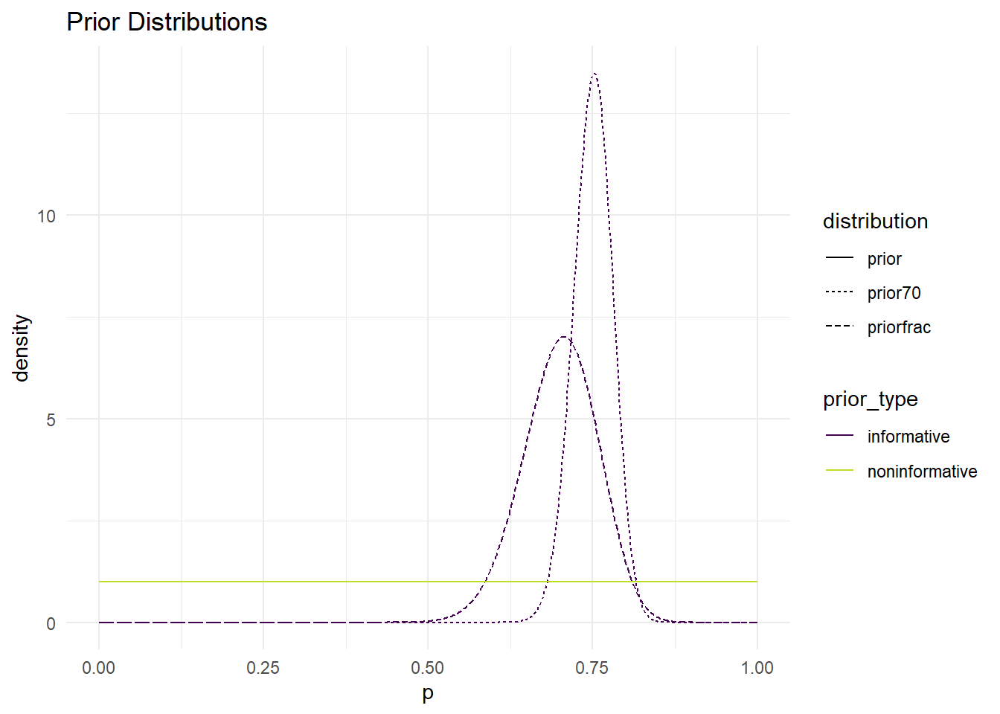
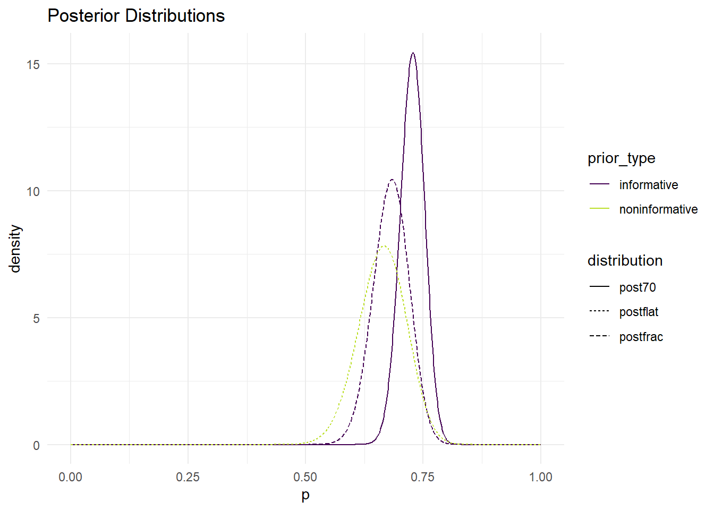

library(tidyverse)# second
target_mean <- .7
alphas <- seq(0.1, 66, length.out = 500)
betas <- .3 * alphas / .7
param_df <- tibble(alphas, betas)
param_df <- param_df |> mutate(vars =
(alphas*betas)/((alphas + betas)^2 * (alphas + betas + 1)))
target_var <- .05657^2
param_df <- param_df |> mutate(dist_to_target = abs(vars - target_var))
param_df |> filter(dist_to_target == min(dist_to_target))# A tibble: 1 × 4
alphas betas vars dist_to_target
<dbl> <dbl> <dbl> <dbl>
1 45.3 19.4 0.00320 0.00000214target_mean <- .75
alphas <- seq(0.1, 200, length.out = 2000)
betas <- .25 * alphas / .75
param_df <- tibble(alphas, betas)
param_df <- param_df |> mutate(vars =
(alphas*betas)/((alphas + betas)^2 * (alphas + betas + 1)))
target_prob <- .05
prob_less_.7 <- pbeta(.7, alphas, betas)
tibble(alphas, betas, prob_less_.7) |>
mutate(close_to_target = abs(prob_less_.7 - target_prob)) |>
filter(close_to_target == min(close_to_target))# A tibble: 1 × 4
alphas betas prob_less_.7 close_to_target
<dbl> <dbl> <dbl> <dbl>
1 160. 53.3 0.0500 0.00000851library(tidyverse)
ps <- seq(0, 1, length.out = 1000)
informative_alpha <- 45.3
informative_beta <- 19.4
noninformative_alpha <- 1
noninformative_beta <- 1
informative_priorfrac <- dbeta(ps, informative_alpha,
informative_beta)
noninformative_prior <- dbeta(ps,
noninformative_alpha, noninformative_beta)
informative_alpha_2 <- 160
informative_beta_2 <- 53.3
informative_prior70 <- dbeta(ps, informative_alpha_2,
informative_beta_2)
noninformative_alpha_1 <- 1
noninformative_beta_1 <- 1
noninformative_1 <- dbeta(ps, noninformative_alpha_1,
noninformative_beta_1)
plot_df <- tibble(ps, informative_priorfrac, noninformative_prior,
informative_prior70) |>
pivot_longer(2:4, names_to = "distribution", values_to = "density") |>
separate(distribution, into = c("prior_type", "distribution"))
ggplot(data = plot_df, aes(x = ps, y = density, colour = prior_type,
linetype = distribution)) +
geom_line() +
scale_colour_viridis_d(end = 0.9) +
theme_minimal() +
labs(x = "p", title = "Prior Distributions")
library(tidyverse)
ps <- seq(0, 1, length.out = 1000)
informative_alpha_post1 <- 45.3 + 56
informative_beta_post1 <- 84 - 56 + 19.4
noninformative_alpha <- 1
noninformative_beta <- 1
informative_postfrac <- dbeta(ps, informative_alpha_post1,
informative_beta_post1)
noninformative_prior <- dbeta(ps,
noninformative_alpha, noninformative_beta)
informative_alpha_post70 <- 160 + 56
informative_beta_post70 <- 84 - 56 + 53.3
informative_post70 <- dbeta(ps, informative_alpha_post70,
informative_beta_post70)
noninformative_alpha_postf <- 56 + 1
noninformative_beta_postf <- 84 - 56 + 1
noninformative_postflat <- dbeta(ps, noninformative_alpha_postf,
noninformative_beta_postf)
plot_df <- tibble(ps, informative_postfrac,
informative_post70, noninformative_postflat) |>
pivot_longer(2:4, names_to = "distribution", values_to = "density") |>
separate(distribution, into = c("prior_type", "distribution"))
ggplot(data = plot_df, aes(x = ps, y = density, colour = prior_type,
linetype = distribution)) +
geom_line() +
scale_colour_viridis_d(end = 0.9) +
theme_minimal() +
labs(x = "p", title = "Posterior Distributions")
# flat posterior
alpha_flat <- 56 + 1
beta_flat <- 84 - 56 + 1
post_mean_flat <- alpha_flat / (alpha_flat + beta_flat)
lower_bound_credible_flat <- qbeta(.05, 57, 29)
upper_bound_crebile_flat <- qbeta(.95, 57, 29)
flat <- tibble(post_mean_flat, lower_bound_credible_flat, upper_bound_crebile_flat)
flat# A tibble: 1 × 3
post_mean_flat lower_bound_credible_flat upper_bound_crebile_flat
<dbl> <dbl> <dbl>
1 0.663 0.577 0.744# 46 out of 66 informative
alpha_46 <- 45.3 + 56
beta_46 <- 84 - 56 + 19.4
post_mean_46 <- alpha_46 / (alpha_46 + beta_46)
lower_bound_credible <- qbeta(.05, 101.3, 88)
upper_bound_credible <- qbeta(.95, 101.3, 88)
post_46 <- tibble(post_mean_46, lower_bound_credible, upper_bound_credible)
post_46# A tibble: 1 × 3
post_mean_46 lower_bound_credible upper_bound_credible
<dbl> <dbl> <dbl>
1 0.681 0.475 0.594# 75% prior
alpha_75 <- 160 + 56
beta_75 <- 84 - 56 + 53.3
post_mean_75 <- alpha_75 / (alpha_75 + beta_75)
lower_credible <- qbeta(.05, 216, 81.3)
upper_credible <- qbeta(.95, 216, 81.3)
post_75 <- tibble(post_mean_75, lower_credible, upper_credible)
post_75# A tibble: 1 × 3
post_mean_75 lower_credible upper_credible
<dbl> <dbl> <dbl>
1 0.727 0.683 0.768The purpose of this project is to attempt to find the probability of Rafael Nadal winning a point on his own serve against Novak Djokovic. To do so, we are creating 3 prior distributions, two of which are based on information from a previous game and a claim made by a sports announcer, and one that is based on no information at all. The first two distributions are called informative distributions, and the other one is a non-informative prior distribution. I will be using a flat prior (Beta(1,1)) for my non-informative prior. After finding the parameters for each prior, I will take the observed data and combine it with the prior distributions to create the posterior distributions.
For the first informative prior, I divided the points won out of total points served (46/66) to get a mean needed in order to use R code to compute the parameters for the informative priors. The variance was already given, so all that was needed was a target mean, which ended up being the result of 46/66. The resulting parameters were determined to be adequate after “testing” them using the beta mean equation to see if the mean matched the target mean, which it did. The assumption that I made when making this prior was that the game that this information was taken from is independent of all other games. I also assumed that the two players had a relatively equal skill level.
For the second informative prior, I used the 75% as the mean, since the curve would need to be centered at .75 because it’s the proportion of points won (according to the sports announcer). To find the parameters, I used code that used a target probability rather than variance since the information given was that Nadal scored no less than 70% of the time which is just P >= .7. I decided to increase the value in the sequence function from 100 to 200 because that gave parameters that had a probability equal to .05, which is the target probability that I chose. If I kept the sequence at 100, the code would only produce parameters that had around a .09 probability of no less than 70%. I felt that .09 wasn’t a small enough probability because it was too close to .1, so I chose parameters that had a lower probability. I also prefer the parameters from the .05 target probability because with the sequence at 200, the probability is almost exactly .05, compared to when the probability was around .094. For this prior, I also assumed that both players had similar skill levels and were therefore evenly matched when the games were played.
For the non-informative prior, I chose to do a flat prior using Beta(1,1), since the beta distribution allows you to model a quantity between 0 and 1.
All of the posterior distributions are different from each other because they all had different parameters and target means due to the difference in information (or lack thereof) provided for each prior distribution. Each posterior distribution has a different mean, so they’re centered at different places on the graph. The flat prior had the lowest mean, which makes sense given that the prior distribution was only Beta(1, 1). It also makes sense that the sports announcer’s posterior has the highest mean because it began with the highest mean and each distribution shifted the same amount, so the mean would remain the highest.
All three also saw a decrease in variance compared to their prior distributions, due to an increase in both beta and alpha. The informative posterior distribution that used the sports announcer’s information has the lowest variance out of the three curves. This could likely be due to the sports announcer’s information being more about Nadal’s overall points won percentage against Djokovic compared to the first informative prior that uses data from only one match. Therefore, we are receiving more information from the sports announcer, so the variance is smaller since there’s less uncertainty. The posterior distribution from the flat prior has the most variance because there’s no information being used. Less variance means that there’s a lower variability, meaning that the values are closer together, which could also stem from knowing more information because it helps with accuracy, therefore it would make sense that the values are closer together.
This certainty is also shown in the credible intervals, where the sports announcer’s posterior distribution had the smallest difference between the upper and lower bounds of their 90% credible intervals (a .09 difference) compared to the other informative posterior distribution that had a difference of .119, and the flat prior that had a difference of .167.
If I had to choose one posterior distribution, I would choose the one that used the previous match for the informative prior because the mean is close to that of the observed data. The variance might be larger than the sports announcer’s posterior, but it seems like the observed data would actually fit under the curve, which I think is more important than a lower variance. The credible interval is not wide enough for it to be an issue either.
The resulting posterior distributions showed that increase both alpha and beta decreased the variance, and a change in mean shifted the distribution curves to the left. The informative posterior distribution that used the most information had the lowest variance and width of its credible interval, but also the highest mean which is likely from the already high target mean used to find the parameters of the prior distribution. The flat prior had the widest variance and smallest mean due to it being non-informative and only having prior distribution of (1,1). The second informative prior that used the previous match saw a decrease in both variance and mean. I think that it’s the best one to use because it seems like it includes the observed data under its curve (unlike the other informative posterior) and had a lower variance than the flat distribution.